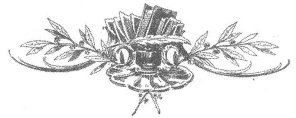

Kadınlar batıl inançlara dinsel vahiy gözüyle baktıkları sürece, skolastik dinbilimin onlar için belirlediği konum ve imkânlarla yetinecekler. Dinsel doğaları nesiller boyunca çarpıtıldı ve büküldü, ki bu durum da kadınlara eşit oy hakkı yolundaki en büyük engel oldu.
ELIZABETH CADY STANTON
Şu anda kendi davranışlarımdan, evanjelik inanca sahip olduğum zamanlarda edindiklerimden çok daha yüce meseleler ve daha onurlu bir yükümlülük duygusu aracılığıyla sorumluyum.
GEORGE ELIOT
Tanrı'ya inanmıyorum, çünkü insanlığa inanıyorum. İnsanlık artık nasıl bir suç işlediyse, Tanrınızın yaptığı aptalca işleri geri alabilmek için binlerce yıldır çalışıp didiniyor.
EMMA GOLDMAN
Her şeye kadir, her şeyi bilen bir ceberrutun, kendi kontrolleri altındaki bir makinede her şeyi ve herkesi basit birer dişli haline getiren bu dünya diktatörlerinden bir farkı yoktur. Böyle bir tanrıyı reddeden bir ateist fazlasıyla haklıdır.
KAREN ARMSTRONG
Bütün dinler aynıdır: Temelde hepsi suçtur, yalnızca tatil günleri farklıdır.
CATHY LADMAN
Tanrı'nın kendilerinden ne yapmalarını istediğini gayet iyi bilen insanlara güvenmem, zira gördüm ki onların arzuları da her zaman bu isteklerle çakışmıştır.
SUSAN B. ANTHONY
Bazıları Sebt Günü'nde de kiliseye gidiyor
Bense oturuyorum evimde
Koro yerine bir bülbül
Mabet yerine de meyve bahçesiyle.
EMILY DICKINSON
İncil bir babanın, kızını cariye olarak satabileceğini (Mısır'dan Çıkış, 21:7), kızının bekâretini bir çeteye feda edebileceğini (Hâkimler, 19:24) ve onu öldürebileceğini, ama yine de iyi bir baba ve ulu bir insan olabileceğini yazar. Bir erkeğin birden çok karısının olabileceğini; onları satabileceğini, birilerine verebileceğini ya da başkalarıyla değiş tokuş edebileceğini, yine de bir beyefendi, iyi bir koca, erdemli bir insan ve Tanrı'ya en yakın insanlardan biri olabileceğini söyler; bu, başlangıç için oldukça iyi bir mevki.
HELEN H. GARDNER
Her çeşit hatanın arasında, peygamberlik en yersizidir.
GEORGE ELIOT
Kadın, dine büyük saygı duyan, iyi bir Hıristiyandı, ama elbette bunların hiçbirinin doğru olduğuna inanmıyordu.
FLANNERY O'CONNOR

En berbat hayatın, en yoksul varlığın Tanrı'nın iradesine atfedilmesini çok tuhaf buluyorum, ama biz insanlar daha varlıklı olduğumuz sürece, yaşam standartlarımız ve tarzlarımız maddi ölçekte yukarıya tırmandıkça, Tanrı da sorumluluk ölçeğini aynı oranda alçaltacaktır.
MAYA ANGELOU
Din, seksten sonra, zihinlerini uçurmak için insanların sahip olduğu belki de en eski ikinci kaynaktır.
SUSAN SONTAG
2000 yılında, umuyorum ki, çocuklarımızı Tanrı'ya değil, insanlığın gizil gücüne inanacak şekilde yetiştireceğiz.
GLORIA STEINEM
Dinsel batıl inançları, kadınların zihinlerinden koparmak ve inançlarını, en azından kendi adıma konuşursam İncil'de ve kilisede asla bulamadığım huzuru ve rahatlığı bulduğum bilime ve akla dayandırmak için çabaladım.
ELIZABETH CADY STANTON
Ateizmin felsefesi, herhangi bir Ahiret ya da Yüce Lider olmayan bir yaşam kavramını öne sürer. Ruhları, kâhinleri ve ortalama ferahlığıyla insanlığı, biçare bir bozulmaya hapseden yalan dünyanın karşısında, özgürleştirici, genişleyen ve güzelleştirici fırsatlarıyla gerçek ve hakikatli dünyanın kavramıdır.
EMMA GOLDMAN
Bir yanıt yok. Bir yanıt olmayacak. Bir yanıt hiç olmamıştı zaten. İşte yanıt bu.
GERTRUDE STEIN
Çocukluğumda Tanrı'nın herhangi bir orduda savaşmadığını öğrenmiştim. Bu nedenle dua etmenin anlamı yoktu. Yine de savaşla ilgili dualar edilmeden önce, her tür vaiz tarafından her çeşit büyü okunurdu. Bu seremonilere biz de katılırdık ve ben askerlerin, oldukları yerde, sanki kulaklarına inanamıyormuş gibi durduklarına şahit oldum. Ben de inanamıyordum, benim bir etkim yoktu. O günden bu yana Tanrı'ya, bize rehberlik edecek bir "ışığa" ya da bu tip şeylere inanmıyorum. Goethe şöyle demiş: "Bu dünyayı Tanrı yaratmışsa, o zaman planlarını gözden geçirmelidir."
MARLENE DIETRICH
Tanrı Yok, Efendi Yok.[12]
MARGARET SANGER